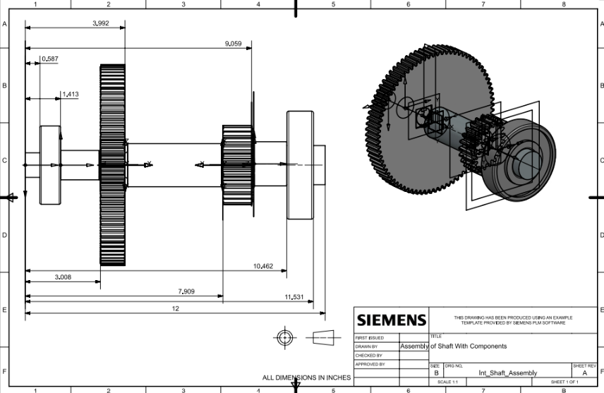
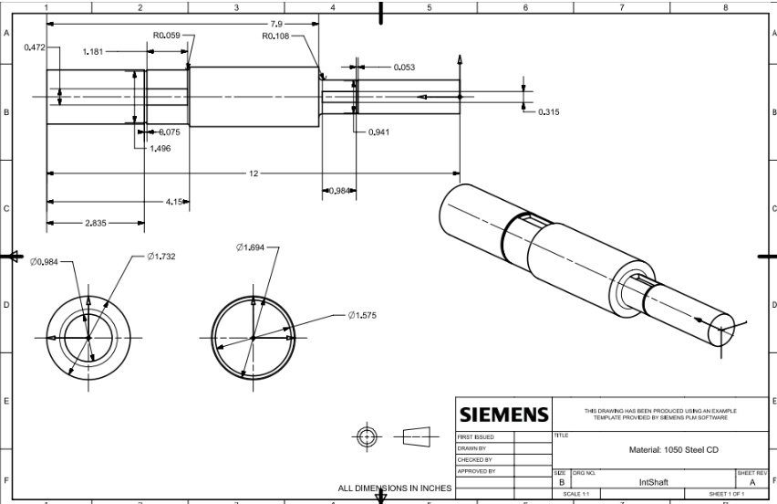

MACHINE DESIGN · SHAFT ANALYSIS · CAD DRAWINGS
Two-Stage Spur Gearbox Design
A two-stage spur gear transmission designed for an electric go-kart, reducing motor speed from 10,000 rpm to 500 rpm while transmitting torque through a shaft, bearing, key, and gear system.

THE CHALLENGE
Designing a compact transmission system
The objective was to design a reliable two-stage spur gear transmission for an electric go-kart. The system needed to achieve a 20:1 speed reduction, converting 10,000 rpm at the motor to 500 rpm at the wheel.
The design balanced gear ratio distribution, catalog gear selection, shaft sizing, bearing placement, keyway geometry, retaining rings, and manufacturability constraints.
GEAR SELECTION
Splitting the reduction across two stages
I selected a 4:1 reduction for the first stage and a 5:1 reduction for the second stage. This avoided extreme loading on a single mesh and helped maintain a more practical gearbox depth.
The finalized gear set used 20, 80, 25, and 125 teeth, with 1045 carbon steel gears and induction hardening considered for improved durability.
SHAFT DESIGN
Designing the intermediate shaft
The intermediate shaft was analyzed under combined bending and torsional loading from the two gear meshes. Bearing reactions, shear force, bending moment, and torque diagrams were used to locate critical stress regions.
The shaft incorporated shoulders, keyways, retaining ring grooves, spacers, and fillets to support load transfer, axial positioning, and manufacturability.

VALIDATION
Checking strength and fatigue performance
The design was validated using Goodman fatigue analysis at significant shaft locations, including shoulders, retaining ring grooves, and keyways.
The most critical location was the keyway on the Gear 3 side, where the selected shaft diameter exceeded the required Goodman minimum diameter. All major shaft locations passed the diameter verification checks.